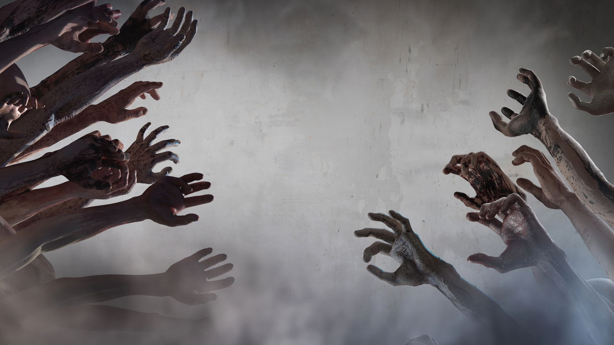

Famílias denunciam desaparecimentos em sequência
Delegacias tratam os casos como ocorrências independentes. Testemunhas afirmam que alguns desaparecidos foram vistos caminhando desorientados durante a madrugada.
CONEXÃO NEGADA
O material a seguir contém registros de violência extrema, desaparecimentos e comportamento humano não identificado. Não prossiga sem uma rota de fuga.
Relatório de campo // dados reunidos após o colapso
Este arquivo reúne apenas aquilo que sobreviventes e equipes de resposta conseguiram observar em campo. A origem do fenômeno permanece desconhecida. Não confunda padrões recorrentes com regras absolutas: cada encontro pode apresentar novas variações.
Transmissões anteriores ao reconhecimento do surto
Os primeiros sinais chegaram como notícias isoladas. Desaparecimentos, ataques e emergências médicas pareciam não ter qualquer relação. Quando as autoridades começaram a comparar os registros, os canais já estavam saindo do ar.
Delegacias tratam os casos como ocorrências independentes. Testemunhas afirmam que alguns desaparecidos foram vistos caminhando desorientados durante a madrugada.
CONEXÃO NEGADAImagens gravadas por moradores mostram agressores avançando mesmo após ferimentos graves. A polícia pede que os vídeos não sejam compartilhados.
MATERIAL REMOVIDOProfissionais relatam ausência de resposta à comunicação e resistência incomum à contenção. A versão oficial menciona uma possível droga sintética.
ALA MÉDICA SELADAFuncionários são afastados e o prédio entra em quarentena administrativa. Autoridades classificam o ocorrido como falha documental.
RELATÓRIO RETIDOOperadores recebem relatos semelhantes em bairros diferentes: febre, confusão, agressividade e perda completa de reconhecimento.
LINHAS SATURADAS“Não são distúrbios. Eles não param.” A gravação é interrompida por ruídos, gritos e uma ordem para abandonar o edifício.
SINAL PERDIDOARQUIVO FICCIONAL // LOCALIZAÇÕES GENERALIZADAS // FONTES E DATAS EXATAS NÃO RECUPERADAS
Leituras de campo incompletas
Não existe uma linha do tempo segura para a progressão. Distância, silêncio e rotas de fuga continuam sendo as medidas mais confiáveis.
Matriz de comportamento
Movimento e ruídos próximos podem alterar rapidamente a direção do infectado.
OBSERVAÇÃO RECORRENTEIndivíduos aparentemente inativos podem reagir sem aviso quando alguém entra em seu alcance.
DISTÂNCIA RECOMENDADAAlguns relatos sugerem gestos ou trajetos repetidos, mas não há prova de reconhecimento consciente.
RELATOS NÃO CONCLUSIVOSUm único contato pode atrair outros e transformar uma rota segura em uma zona de cerco.
RISCO DE EFEITO EM CADEIADiferenças físicas e comportamentais podem indicar estágios avançados ou respostas individuais.
CATÁLOGO EM FORMAÇÃOHá registros contraditórios de infectados que não correspondem aos padrões conhecidos.
AMEAÇA AINDA NÃO CLASSIFICADASequência aproximada // variações possíveis
Desorientação e alterações físicas podem surgir antes do comportamento abertamente hostil.
A comunicação deixa de produzir reconhecimento seguro. A aproximação passa a ser um risco extremo.
O infectado reage ao ambiente e persegue estímulos próximos com agressividade.
Tempo, condições físicas e fatores desconhecidos podem produzir diferenças entre indivíduos.
O que acontece depois ainda não foi compreendido — ou ninguém sobreviveu tempo suficiente para registrar.
Arquivo sem origem confirmada
O arquivo antecede as primeiras transmissões oficiais, mas seus metadados foram destruídos. Se for autêntico, alguém já sabia o que estava acontecendo antes de todos os outros.